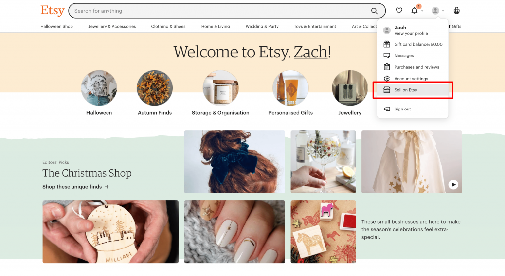
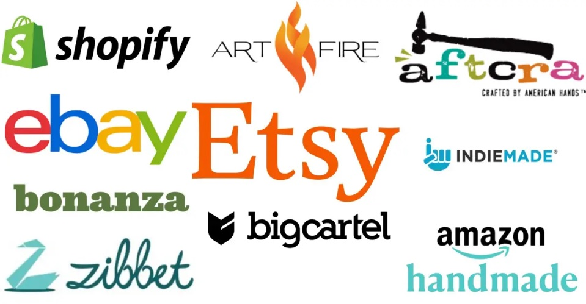
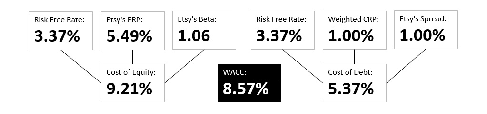
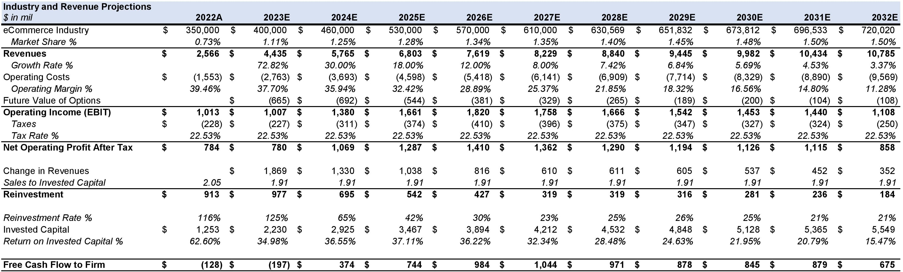
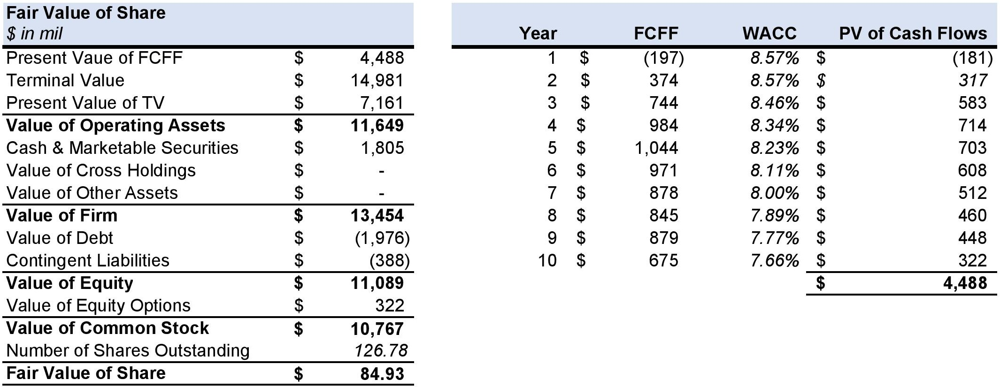

Etsy - Making Handmade Cool Again!
Etsy is an e-commerce website that specializes in handmade, vintage, and unique items. The platform was launched in 2005 and has since grown to become a popular online marketplace for independent creators and small businesses to sell their products.     
Etsy has a global community of sellers who create and sell a wide range of products, including jewelry, clothing, home decor, art, and craft supplies. In addition to handmade and vintage items, Etsy also allows sellers to sell digital downloads and custom-made items.
One of the unique features of Etsy is the ability for buyers to communicate directly with sellers and request customizations or ask questions about products. Etsy also has a rating and review system that allows buyers to leave feedback about their purchases, which helps to build trust and transparency on the platform.
Etsy charges sellers a fee for listing and selling items on the platform, as well as a payment processing fee for transactions. However, many sellers find that the exposure and sales they receive through Etsy outweigh the fees.
Company’s Strengths: (Unique selling proposition and brand identity) Etsy has a unique selling proposition as a platform for handmade, vintage, and unique items. This sets it apart from other e-commerce platforms, and it has a strong brand identity that resonates with its target audience. (Large and active community) Etsy has a large and active community of buyers and sellers, which creates a network effect and reinforces its position as a leading platform for creative entrepreneurs. (User-friendly interface and seller tools) Etsy offers a user-friendly interface for buyers and sellers, and provides sellers with tools to manage their shops, including inventory management, shipping options, and marketing tools. (Focus on sustainability and social responsibility) Etsy has a strong focus on sustainability and social responsibility, which resonates with many consumers and helps to differentiate it from other e-commerce platforms.
Company’s Weaknesses: (Competition) Etsy faces competition from other e-commerce platforms, such as Amazon Handmade, which could negatively impact its market share. (Perceived overpricing) Some consumers may perceive Etsy's products as overpriced compared to mass-produced alternatives, which could limit its customer base. (Dependence on sellers for revenue) The company's dependence on its seller community for revenue makes it vulnerable to changes in seller behavior, such as increased fees or restrictions on certain products.
Potential Opportunities: (Growing interest in sustainability and ethical consumerism) The growing interest in sustainability and ethical consumerism presents an opportunity for Etsy to attract more customers who prioritize these values. (Increasing popularity of online shopping) The increasing popularity of online shopping and e-commerce presents an opportunity for Etsy to expand its customer base and increase sales. (Expansion into new markets or product categories) Etsy has the opportunity to expand into new markets or product categories, such as digital products or subscription services.
Threats that company might face: (Global economic uncertainty and potential recession) The global economic uncertainty and potential recession could negatively impact consumer spending and reduce demand for Etsy's products. (Increased competition) Increased competition from other e-commerce platforms, as well as new entrants into the market, could threaten Etsy's market position. (Changes in government regulations or policies) Changes in government regulations or policies related to e-commerce could impact Etsy's operations and revenue.
Competitors: (Amazon Handmade) Amazon's own platform for selling handmade goods. (eBay) A global online marketplace for buying and selling new and used goods. (Bonanza) A marketplace for unique, handcrafted, and vintage items. (Zibbet) A marketplace that offers features for artists, makers, and vintage collectors. (Handmade at Amazon) A section of Amazon.com dedicated to handmade items. (ArtFire) A marketplace for handmade, vintage, and supplies. (Folksy) A UK-based marketplace for handmade goods. (Made It Myself) An online marketplace for buying and selling handmade goods. (Ruby Lane) An online marketplace for antiques, art, vintage collectibles, and jewelry. (eCrater) An online marketplace for buying and selling handmade goods, art, and vintage items.
Corporate Governance: The CEO (Josh Silverman) of Etsy is also the Member of Board of Directors.
Valuation Summary
Based on the key pointers and fundamentals, here is my summary of my valuation of Etsy.
Discounted Cash Flow Analysis: My base case analysis, with a Discount Rate of 8.57% based on Cost of Equity based on CAPM (Capital Asset Pricing Model) and a Terminal FCF Growth Rate of 2%, produced fair value of $84.93.
Equity Options: Etsy issues about $348 million worth of equity options each financial year which I treated as operating expense in forecasted period for next 10 years.
Current Share Price: At $107.67, Etsy appears fair to the implied intrinsic value from my valuation methodologies.
Other Methodologies: I do not view Precedent Transactions as meaningful due to the overly broad selection criteria as well as the lack of truly comparables deals; the public markets have also changed substantially in the past year, and the M&A transactions, many of which are from 3-5 years ago, do not reflect current market conditions.
Target Price: As a result, I selected $92.2 as my target price for my sell recommendation. Noting the fact that, the target price is based on 12 months.
Thank you for reading! Check out my valuation by downloading the Etsy's Analysis below.